Александр Иванюк
Наверное, все люди на свете слушают музыку. Какую - это уже другой вопрос, но то, что жизнь без музыки довольно скучна и невыразительна, абсолютно точно. Наслаждаться полифонией тоже можно по-разному - кому-то хватает качества обычной кассеты с магнитной пленкой, другие не признают уровня ниже цифрового аудио-CD, а некоторым вообще достаточно радиовещания.
С тех пор, как Томас Алва Эдисон в 1877 г. изобрел фонограф, утекло немало воды. С годами качество записи музыки все улучшалось, на смену граммофонным пластинкам пришли кассеты, за ними появились CD, которые сейчас и являются стандартом качественного звука. Конечно же, звукозапись не могла в своем развитии пройти мимо компьютерных технологий. С появлением мощных процессоров, хороших аудиокарт и возможности создания всяких немыслимых эффектов с помощью соответствующих программ многие музыканты сообразили, что даже частичная обработка звука на компьютере - весьма привлекательная и удобная вещь.
Сейчас редкая звукозаписывающая студия обходится без компьютерного оборудования. С появлением в 80-х годах формата MIDI многие люди (не обязательно музыканты) почувствовали в себе интерес и силы написать что-то свое, т. к. это было довольно просто, а главное, не требовало мощного компьютера и больших объемов от жесткого диска. Были и MOD'ы, и другие форматы музыкальных файлов, но при своем маленьком размере они не могли передать оригинального качества музыки. Аудио-CD уже вовсю распространились, и их можно было перезаписывать на винчестер в формате WAV. Качество при этом практически не отличалось от CD, да и программы, записывающие аудиодиски, до последнего времени работали в основном с файлами этого расширения, так что музыкантам-любителям или разработчикам игрушек приходилось иметь дело именно с этим форматом.
Всем Wav-файлы хороши, кроме огромного размера - минута звучания с CD-качеством занимает 10 Мбайт, поэтому, конечно, переписывать понравившийся CD на винчестер было весьма накладно. Люди мирились с этим до поры до времени, пока наконец не изобрели стандарты сжатия файлов с приемлемым качеством. Так появился ныне очень популярный формат MP3 (Mpeg Layer 3). Развитие технологий сжатия началось давно, но только 3-й алгоритм сжатия смог обеспечить необходимое качество звука, чтобы удовлетворить большинство слушателей. Сейчас аудио-CD можно записывать из файлов MP3, продаются миниатюрные плейеры, проигрывающие эти файлы, а количество музыки этого формата в Internet просто огромно. При этом MP3, придуманный уже несколько лет назад, считается сейчас самым продвинутым стандартом сжатия, в то время как работы в этой области не стоят на месте.
Несомненным конкурентом MP3 является менее распространенный и соответственно менее известный формат VQF, который при меньших размерах обеспечивает сравнимое, если не лучшее качество звука. Вытеснит ли он в скором времени файлы MP3 или нет, что он собой представляет, какие у него преимущества и недостатки перед MP3 и почему он до сих пор мало распространен - все это подробно мы и рассмотрим дальше, постараясь сравнить его с MP3 по всем важным аспектам.
Немного истории MP3
Формат сжатия Mpeg Layer 3 был разработан Fraunhofer' овским институтом в конце 1996 г., являясь следующим звеном в цепочке эволюции после Mpeg Layer 2. Первоначально новый стандарт предполагалось использовать в аудиоконференциях, но потом очень многие сообразили, что возможности его куда шире. В момент появления Mpeg Layer 3 существовал разработанный тем же институтом примитивный проигрыватель файлов этого формата, который стоил две сотни долларов, однако ситуация в корне изменилась, когда новый стандарт сжатия был сертифицирован и получил официальную регистрацию. Производством проигрывателей и кодеров стали зани- маться все кому не лень, так же, как и плодить файлы MP3. К 1998 г. проигрыватели и кодеры вышли уже на приличный уровень и в Internet стали появляться большие архивы самой различной музыки. Затем - специальные поисковые серверы, и с этого момента в Глобальной сети можно было найти практически любую песню. Всем этим, конечно, был нанесен большой урон студиям звукозаписи, однако те поделать уже ничего не могли. Некоторые люди оцифровывают только появившиеся новые альбомы целиком и выкладывают их на свои сайты, а с распространением MP3-плейеров, которые по качеству звука, несомненно, лучше кассетников, вообще не остается сомнений в популярности и всеобщем признании этого формата.
Формат Mpeg Layer 3 нашел свое применение и в играх, так как в случае его использования можно сжать и речь, и музыку в 10-12 раз по сравнению с WAV или треками в формате CD-аудио при сходном качестве, которое в играх к тому же не так критично, как при прослушивании музыки.
VQF
Стандарт был разработан компанией Yamaha примерно на год позже появления Mpeg Layer 3. Собственно, алгоритм сжатия называется TwinVQ, и надо сказать, что он получился более качественным, нежели любимый всеми Mpeg Layer 3. Беда его в том, что проигрыватели файлов, сжатых по этому стандарту, появились уже в то время, когда в Internet были тысячи MP3-файлов, и поколебать незыблемость широко распространившегося формата было достаточно трудно. Стандарт этот, кстати, довольно сильно ориентирован на прослушивание музыки напрямую из Internet, наподобие RealAudio. Сейчас, несмотря на то что сайтов, посвященных VQF, еще мало, формат потихоньку распространяется по Сети, и уже довольно часто можно встретить в музыкальных архивах файлы, сжатые по технологии TwinVQ. Так что, возможно, через годик-другой VQF и потеснит MP3, ведь на то есть достаточно причин, которые мы и рассмотрим далее.
Особенности форматов
Начнем с полюбившегося всем Mpeg Layer 3. В алгоритме сжатия здесь в основном применяется обрезание маскированных частот (проще говоря, звуков такой частоты, которую человеческое ухо не улавливает или улавливает, но плохо), резервируется информация, по которой потом восстанавливаются высокие частоты и т. д. За счет вышеперечисленных вещей, а также специальных алгоритмов компрессии и достигается сжатие оригинального файла в 10-12 раз. При этом результирующий звук считается на уровне качества аудио-CD, и ему соответствует битрейт в 112-128 Кбит/с. Это самое CD-качество весьма относительно, т. к., несмотря на компрессию звука с частотой в 44 кГц, что соответствует стандартному аудио-CD, недостатки и искажения верхних частот заметны большинству людей. Конечно, свой отпечаток наносит используемая программа-кодер (так, например, кодер Xing жмет очень быстро, но обрезает все частоты выше 16 кГц, а то и еще раньше). А всем, наверное, из школьного курса физики известно, что среднестатистический человек слышит звуки до 20 кГц, так что ощущаются искажения на высоких звуках (появляются, в частности, паразитные звуки, напоминающие звучание тарелок). Сказывается и режим, в котором композиция списывалась на винчестер - цифровой или аналоговый. Рекомендуется писать в цифровом - выигрыш в качестве в этом случае довольно заметный, особенно если у вас неважная аудиокарта. При этом не стоит забывать, что большинство старых CD-ROM не поддерживают режима цифрового "выдирания" треков, а если и поддерживают его, так весьма отвратно. Кодирование с битрейтом меньше 112 Кбит/с отличается резким падением качества и довольно неприятным звучанием. В целом оно еще похоже на кассетный звук, но искажения, несомненно, больше.
|
Большинство легальных записей предлагается как раз в качестве типа 22 кГц, 64-96 Кбит/с в расчете на то, что основное-то можно разобрать, а хочется хорошего качества - покупай оригинальный CD. Или же, по авторским правам, пишется с CD-качеством (44 кГц, 128 Кбит/с), но не более минуты. Нелегальные файлы кто-то кодирует на 160, 192 и более Кбит/с, звук получается, конечно, лучше, но и размер соответственно увеличивается.
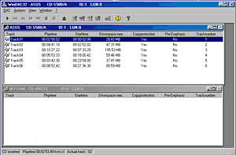
Рис. 1. CD-ripper Windac.
К тому же сжатие на 256 Кбит/с и чуть меньше входит в устаревший формат Mpeg Layer 2, и, если уж у вас много места и вы гонитесь за наилучшим качеством, не проще ли держать все в WAV? Тут все упирается в размер, так что давайте к нему и перейдем.
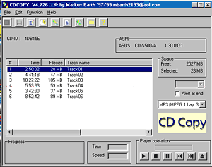
Рис. 2. CD-ripper CDCOPY.
MP3 с CD-качеством занимает примерно столько же места в Мбайт, сколько минут и звучит (для тех, кто не понял - песенка в 5 мин займет 5 Мбайт). Учитывая то, что файлы MP3 практически не сжимаются, да в Internet их никто и не жмет, подумайте, сколько реально оттуда можно скачать и стоят ли того затраченные усилия при не шибко-то дешевых услугах провайдеров.
|
Теперь поговорим обо всем, что касается процесса записи файла и использования кодировщика, потому как это немаловажный вопрос в сравнении двух форматов. Сразу скажу, что процедура создания файлов MP3 и VQF практически одинакова. Сначала интересующий вас файл должен быть списан на жесткий диск CD-ripper, которая прочитывает звуковые дорожки, как правило, в цифровом виде, в Wav-файл с параметрами, соответствующими CD-качеству (44 кГц, 16 бит), а уже после этого списанный файл сжимается по заданному алгоритму программой-кодировщиком. Наиболее известны следующие CD-ripper (в скобках указаны последние, существовавшие на момент написания статьи версии): WinDac (1.49), CDCOPY (4.726) и Audiocatalyst (2.0). Все программы коммерческие, так что для свободного скачивания предоставляются только демоверсии. Audiocatalyst заодно является и кодировщиком, использующим кодер производителя - уже упомянутый Xing.
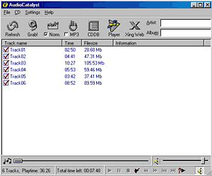
Рис. 3. CD-ripper Audiocatalyst.
К CDCOPY можно подключать различные кодеры (поддерживает он их довольно много) путем простого копирования соответствующих DLL-библиотек в директорию программы. Сейчас, кстати сказать, отдельные программы-кодеры Mpeg Layer 3 уже практически ушли. Они были распространены на заре становления формата, а в наше время упор делается на программы, которые одновременно "выдирают" треки и тут же их компрессуют, так что компрессоры если не включаются в поставку программы-ripper, то подключаются в виде библиотек, а не исполняемых файлов. Пожалуй, последняя, все еще очень популярная программа MP3 Producer является исключительно кодировщиком, работающим по алгоритму Fraunhofer Institute. Это, пожалуй, самый качественный кодировщик из всех существующих, но и самый медленный. Впрочем, как известно, за все надо платить - хотите иметь более качественный, придется подождать.
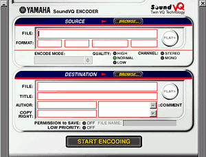
Рис. 4. Энкодер VQF-файлов от Yamaha.
В то же время искажения в звуке на высоких частотах все равно не пропадают, и лично мне вполне хватало Xing, потому что ждать в 3 раза меньше не только для меня, но и для многих других людей более весомый аргумент перед довольно-таки иллюзорным приростом качества. Хотя, если старательно прислушиваться, Xing, конечно, проигрывает. Но в таком случае, если вас так волнует качество звука, по-моему, и слушать надо аудио-CD, а не MP3. Популярным является также кодер Blade, который занимает нишу по соотношению производительность/качество между Fraunhofer и Xing. Существуют и другие кодеры, но в данный момент они мало распространены. Теперь, когда, я надеюсь, с MP3 все ясно, перейдем к рассмотрению формата TwinVQ.
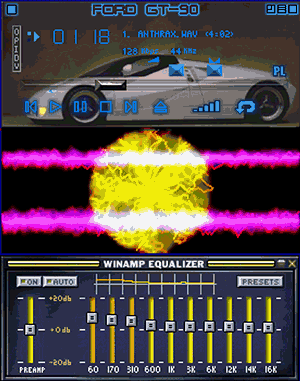
Рис. 5. Проигрыватель файлов MP3 Winamp с визуализацией и эквалайзером.
Примененная здесь технология сжатия музыки хотя и имеет некоторые общие моменты (тот же поток битов, например), в целом совершенно другая. В этом методе индивидуальные биты музыкальных данных непосредственно не кодируются, а объединяются в сегменты (вектора). Они сравниваются со стандартными образцами. Выбирается стандартный вектор, который обеспечивает ближайшее соответствие, и количество, связанное с этим образцом, передается как код сжатия. Данные упаковываются в длинный или короткий фреймовый режим (8 subframes) согласно константе битрейт для того, чтобы понизить вероятность возникновения ошибки. Искажения сводятся к минимуму, так что музыка и другие звуки успешно воспроизводятся с качеством, очень близким к оригиналу. При этом в среднем достигается компрессия 1:18 и качество, субъективно лучшее, чем у Mpeg Layer 3 при меньшем к тому же битрейте. Так 128 Кбит/с Mpeg Layer 3 соответствуют 80 Кбит/с TwinVQ.
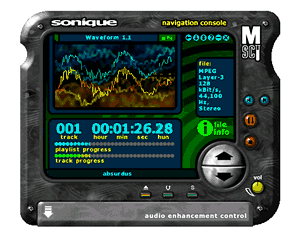
Рис. 6. Проигрыватель файлов MP3 Sonique.
Нетрудно догадаться, что размер файла VQF при этом порядочно меньше, а именно процентов на 30. Конечно, с первого раза в это не верится, и, когда слушаешь файл, а проигрыватель показывает, что он всего на 80 Кбит/с, так и кажется, что MP3 на 128 Кибт/с лучше, но потом начинаешь понимать, что VQF ничем не хуже, просто он как бы немного другой. Все дело в методе компрессии. Если Mpeg Layer 3 акцентирует внимание на определенных деталях и работает по принципу избирательности, то TwinVQ в свою очередь как бы сглаживает звук, наподобие того, как сглаживает текстуры 3D-ускоритель. Там визуально, а в нашем случае - на слух, в общем, все как бы лучше, но мелкие детали в теряются. Это совершенно не значит, что VQF совершенно не передает детальности музыки, напротив, просто он лучше подходит к одной музыке, чем Mpeg Layer 3, а тот в свою очередь где-то немного обходит файлы VQF. Однако при компрессии по алгоритму, разработанному Yamaha, с битрейтом в 96 Кбит/с (а это, кстати, максимальное значение) качество звука получается гораздо лучше, чем у файла MP3 128 Кбит/с, а фанаты и разработчики уверяют в том, что такой VQF-файл по качеству соответствует Mpeg Layer 3 на 256 Кбит/с, при том, что занимает он в 4 раза меньше места на жестком диске.
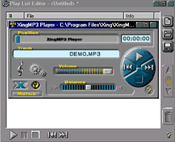
Рис. 7. Проигрыватель файлов MP3 XingMP3 Player.
Однако все уж очень хорошо, скажете вы. Наверняка здесь есть какой-то подвох. Подвох, конечно, есть, но, по существу, он действительно один, а не множество, как думали, и, может, до сих пор думают сторонники MP3. Первоначально существовало заблуждение, что даже для проигрывания VQF-файлов необходим очень мощный компьютер, т. к. разрабатывался этот формат для использования на мощных машинах. Несмотря на то, что последнее утверждение - чистая правда, требования для прослушивания VQF-файлов точно такие же, как и для MP3, и процессор при проигрывании загружается или чуть меньше, или чуть больше - процентов на 10, в зависимости от проигрывателя (о которых попозже). А вот что касается кодировки - тут MP3 впереди на лихом коне, единственный широко доступный кодер для создания VQF-файлов, разработанный все той же Yamaha, жмет еще раза в два медленнее, чем Fraunhofer для MP3. И это даже на сравнительно мощных процессорах (Pentium II 350). Но, как я уже сказал ранее, за все надо платить. В данном случае это того стоит. Да, файлы VQF не так широко распространены, но уже сейчас в Internet есть тысячи файлов в этом формате, так что в скором времени они, по-моему, начнут теснить MP3.
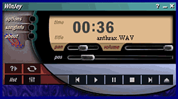
Рис. 8. Проигрыватель файлов MP3 Winjey.
Другой не очень хорошей особенностью является также то, что, как и кодер, существует всего один декодер. Угадайте от кого. Так что во всех существующих проигрывателях используется именно эта библиотека. Наверняка ведь, скажете вы, под VQF нужны свои проигрыватели, и, судя по вышеописанному, он, скорее всего, присутствует в единственном числе и, конечно же, сделан фирмой Yamaha... А вот и ничего подобного! Впрочем, перейдем к более детальному разбору этого вопроса и начнем с гигантов, ориентированных в основном на MP3.
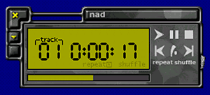
Рис. 9. Проигрыватель файлов MP3 NAD.
Проигрыватели
Самый лучший на сегодняшний день проигрыватель файлов MP3, и не только их, - Winamp. Кроме отличной поддержки Mpeg Layer 3, он также играет файлы WAV, MOD, MID, WMA, MP1, MP2, VOC, XM, IT, аудио-CD и множество других форматов, что делает его очень универсальным и, следовательно, удобным. К Winamp есть также маленький рlug-in для проигрывания VQF-файлов. Работает он не очень здорово, но в целом со своими функциями справляется. Кроме того, многие слушатели, знакомые с этим проигрывателем, наверняка знают, что внешний вид Winamp можно менять посредством так называемых "шкурок" (skins), количество которых на сайте разработчиков проигрывателя превышает 1000 штук. Для создания своих интерфейсов можно раздобыть соответствующий SDK, так что при желании можете нарисовать что-нибудь свое. Надо сказать, что встречаются очень приятные "шкурки", которые куда как больше радуют глаз, чем стандартная серенькая панелька с невыразительными кнопками. Кроме того, очень приятен тот факт, что с последним релизом - 2.50с - Winamp стал совершенно бесплатным, а это воистину королевский подарок всем любителям прослушивать файлы MP3 и все такое прочее.
|
Вообще говоря, в состав проигрывателя входит довольно большое количество рlug-ins, а еще множество распространяется отдельно. Интересным, на мой взгляд, является визуализация, где в зависимости от выбранного рlug-in рисуются всякие разноцветные линии и фигурки, которые изменяются синхронно с интенсивностью и характером музыки. В общем, всех достоинств Winamp просто не перечесть, так что, если вы еще почему-то незнакомы с этим проигрывателем, обязательно достаньте его, а тем, кто знаком, рекомендую скачать последнюю версию - она того стоит, учитывая то, что в полном варианте именно в нее включена поддержка относительно нового стандарта WMA, разработанного в Microsoft.
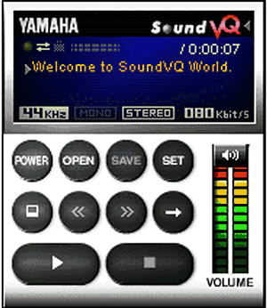
Рис. 10. Проигрыватель файлов VQF от Yamaha.
Другой не менее мощный и приятный во всех отношениях проигрыватель называется Sonique. Он поддерживает не так много форматов файлов, но то, что поддерживает, играет очень здорово. Декодер действительно очень быстрый, присутствуют, как и в Winamp, визуализация, plug-ins, "шкурки", поддержка нового стандарта WMA ну и, конечно, проигрыватель - тоже бесплатный. Единственное, что надо сделать, - зарегистрироваться на сайте разработчика, что, по-моему, не так уж много за отличный проигрыватель.
К интересным особенностям Sonique стоит отнести 20-полосный эквалайзер, который, правда, в отличие от Winamp не позволяет менять отдельно значение каждого ползунка, а двигает по параболе и соседние. Несмотря на указанный недостаток, такой эквалайзер позволяет более точно подстроить звук под ваши предпочтения, да и отсчет времени ведется в сотых долях секунды. Есть возможность, кроме, конечно, настройки громкости обычной кнопкой Volume, регулировать звук и по выходной мощности декодера, менять темп проигрывания звука и другие интересные особенности. По-хорошему, этот проигрыватель вправе делить первое место с Winamp, и, возможно, он занимал бы его единолично, если бы вышел раньше, а так, к несчастью, большинство ставят его на почетную вторую позицию. Последняя версия проигрывателя - 1.05, но, судя по всему, к моменту выхода этой статьи появится новая, может быть, и не одна.
Совсем неплохой проигрыватель - Xing MP3 Player - сделала одноименная компания. Она поставляет его со своим CD-ripper - кодером Audiocatalyst 2.0. Обе эти программы взаимосвязаны, и из одной легко перейти в другую. Проигрыватель довольно простой, но приятный на вид. Использует он, конечно, декодер собственного изготовления, хотя поддерживает и другие. Стандартные опции и ничего лишнего типа визуализации. Кроме того, программа эта далеко не бесплатная, так что не думаю, что кто-то отдаст ей предпочтение на фоне всего вышесказанного о других player.
Еще один более или менее известный проигрыватель называется Winjey. Создается такое впечатление, что большей своей частью он содран с Winamp'а, как в плане возможностей, так и интерфейса. Поддерживает plug-ins и "шкурки" от вышеупомянутого проигрывателя и не способен похвастаться чем-либо уникальным. Я имел "счастье" общаться с версией 1.01. Вам же этого не советую.
На этом хорошие и солидные проигрыватели, ориентированные в основном на MP3-файлы, заканчиваются. На заре становления формата был популярен проигрыватель NAD, однако он довольно быстро отдал концы, не выдержав конкуренции с Winamp, хотя поначалу был более перспективным. Сейчас еще можно найти на основных сайтах, посвященных MP3, версию типа 0.92, но на фоне вышеперечисленных двух первых гигантов она совершенно не смотрится. Существуют, конечно, и другие проигрыватели, но они или не столь популярны, или ориентированы в первую очередь на VQF-файлы, или, по крайней мере, преподносятся таким образом. Вот о таких проигрывателях формата-конкурента дальше и пойдет речь.
Начать надо, пожалуй, с вездесущей компании Yamaha, которая и тут не осталась в стороне. Хотя на самом деле, выпустив уникальный кодер с красивой и удобной оболочкой (последняя версия 2.54eb4), она могла бы успокоиться и не пугать людей такой свирепой штукой, как проигрыватель собственного изготовления, который называется YAMAHA SoundVQ Player. Что-нибудь более убогое и невзрачное по дизайну, наверное, сложно придумать. Впрочем, что это описывать - посмотрите соответствующий скриншот. Возможностей у этого проигрывателя - кот наплакал, хотя тут сразу стоит отметить, что ни один из проигрывателей VQF-файлов не поддерживает прокрутки по файлу, и многих других вещей, что, конечно, очень печально. Последняя на момент написания статьи версия этого мощного продукта - 2.51eb1.
|
К счастью, данному изделию есть альтернативы, в частности проигрыватель нашего (в смысле российского) производства под названием VSSPlayer Revolution. Он поддерживает "шкурки", с проигрывателем поставляется SDK для их изготовления, а также имеется несколькоязы- ковой интерфейс. Проигрыватель не может пролистывать VQF-файл и использует Yamaha'вскую библиотеку для декодирования. Программа не бесплатная, но для жителей бывшего СССР автор любезно предлагает ее всего за 70 рублей. Кроме VQF-файлов, проигрываются также MP3, WAV и др., причем их звучание, в отличие от первого, можно настраивать эквалайзером. Вот, в принципе, и все.
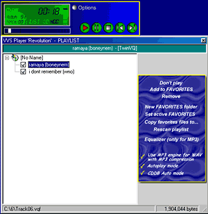
Рис. 11. Проигрыватель файлов VQF VSSPlayer Revolution.
K-jofol - самый лучший проигрыватель VQF, а заодно MP3 и AAC-файлов. Он поддерживает рlug-ins, "шкурки" и кучу других настроек. Мало того, он даже худо-бедно умеет передвигаться по VQF-файлу, правда, делает это весьма медленно. Также им поддерживается ускорение или замедление скорости проигрывания, о чем остальные проигрыватели файлов формата TwinVQ и мечтать не могут. Конечно, присутствует эквалайзер, но я что-то не заметил, чтобы он принципиально влиял на звук. "Шкурки", кстати, используются от Winamp. Добавлю, что последняя версия уже довольно давно не обновлялась и имеет наименование 0.51. Будем надеяться, что авторы все-таки доведут свой проигрыватель хотя бы до версии1.0.
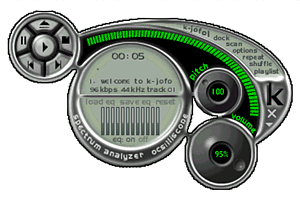
Рис. 12. Проигрыватель файлов MP3 и VQF K-jofol.
Ну а в завершение хотелось бы упомянуть еще один проигрыватель, который называется Soritong. Очень неплохой проигрыватель, воспринимающий как VQF, так и MP3 и кое-что еще. Поддерживает "шкурки", многочисленные настройки и в целом смотрится хорошо. Однако, несмотря на то что последняя версия как бы 1.0b, на релиз это еще мало похоже, так как всяких глюков встречается порядочно - то не находится библиотека декодирования, то приостановленный файл после нажатия на кнопку Play начинает трещать и т. д. Остается надеяться, что все это будет исправлено, так как перспективы у этого проигрывателя, несомненно, есть.
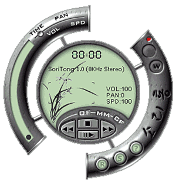
Рис. 13. Проигрыватель файлов MP3 и VQF Soritong.
|
Так что же выбрать?
На этот вопрос каждый должен ответить сам. Надеюсь, что открыл для вас что-то новое и интересное. Познакомиться с форматом сжатия VQF, если вы еще не успели этого сделать, по-моему, стоит каждому любителю сжатой музыки, т. к. под ваш любимый стиль, возможно, он подходит лучше, а лишнего места на винчестере, как правило, не бывает. Да и качество все же он обеспечивает получше. А для прослушивания пользуйтесь любимым Winamp с соответствующим plug-in. Если же приведенные здесь мной доводы не вдохновили вас, то слушайте MP3 - эти файлы распространены, проигрывателей много, есть из чего выбирать, да и музыку можно найти почти любую. В общем, вам решать. Я же считаю, что VQF сильно потеснит MP3 в скором времени, если ему, конечно, не перекроет кислород формат MP4, находящийся сейчас в разработке. Что самое смешное, он будет основываться на технологиях VQF и AAC, а не MP3, как можно было бы предположить из названия.
|